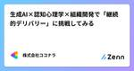

株式会社ココナラさんのフィード
https://zenn.dev/coconala
株式会社ココナラのテックブログ用アカウントです。 ココナラに所属するエンジニアが多様な記事を執筆して公開していきます。 採用情報はこちら → https://coconala.co.jp/recruit/engineer ココナラWebサイト→ https://coconala
フィード

生成AI×認知心理学×組織開発で「継続的デリバリー」に挑戦してみる 2
2
株式会社ココナラさんのフィード
こんにちは。株式会社ココナラ在籍のKです。エンジニアの世界では、生成AIといえばコーディング支援や設計の壁打ち相手として語られることが多いです。そんな中、「生成AIの特性を考えると、実は組織開発にも使えるのではないか？」とふと思い立ち、チーム内で小さな実験を始めました。本記事では、生成AIと認知心理学を組み合わせてチームのモチベーションを継続的に改善する試みを紹介します。 TL;DR（要約）生成AI×認知心理学によるモチベーション改善アンケートの作成アプローチを紹介具体的なプロンプトと、データと対話で改善を続ける「モチベーションの継続的デリバリー」の実践方法を解説...
13日前
Android Gradle Pluginをv8.7.3へアップデートしてみた
株式会社ココナラさんのフィード
株式会社ココナラアプリ開発グループ、Androidチームの長谷山です。今回は、ココナラAndroidアプリにおけるAndroid Gradle Plugin (AGP) のバージョンアップ対応についてご紹介します。 背景ココナラのAndroidアプリでは、Android14対応時にAGPを8.0.0までアップデートしました。当初、We recommend using a newer Android Gradle plugin to use compileSdk = 34の警告を消すためにAGP8.1.1までアップデートを検討しましたが、androidx.lifecycleのバー...
14日前

XCTestからSwiftTestingへ：モダンなiOSテスト手法とBDDによる仕様書化
株式会社ココナラさんのフィード
株式会社ココナラアプリ開発グループ、iOSチームの上田です。今回はココナラのiOSアプリのテストについてご紹介したいと思います。 1. はじめにiOSアプリ開発において、テストは品質保証の重要な柱です。Appleは長年XCTestフレームワークを提供してきましたが、Swift言語の進化に合わせて、より表現力豊かでモダンなテストフレームワーク「SwiftTesting」が登場しました。今回は、XCTestからSwiftTestingへの移行方法と、ViewModelのテストをBDD（Given-When-Then）アプローチで実装することで、テストが仕様書としても機能する方法を...
19日前
技術ブログに書けることがないわけない！
株式会社ココナラさんのフィード
こんにちは。インフラ・SREチームマネージャーのよしたくです。 はじめに「技術ブログには何を書いていいかわからない」技術ブログの運用をしているとこのような声を聞いたり、自身がこのように思ったりしたことがあるのではないでしょうか。これに対しては持論があって、「どんなエンジニアでも、アウトプットできる何かを持っている」というものです。しかし、それを阻害する要因の方が強く出てしまうため前述の気持ちに行き着いてしまうのだと考えています。本記事では、これまでの経験をベースとして、実際に聞いた意見とそれに対してどう考えるのが良いのか、ということについてラフに記述していきます。 ...
1ヶ月前
Salesforceの入力をサポートするChrome拡張を作って社内公開した話
株式会社ココナラさんのフィード
こんにちは！エージェント開発部でチームマネージャーをしている大川です。普段は、ココナラテック や ココナラアシスト をはじめとするエージェントサービスや、営業生産性を向上させる社内向けツールの開発に取り組んでいます。弊社ではSFAとしてSalesforceの利用を始めたのですが、運用をしていく中でいくつかの課題が出てきました。今回はその課題の1つを、Chrome拡張機能(Chrome拡張)を開発することで改善している話をしていきます。 背景営業メンバーのSFAやCRMの入力が負担になってしまう、というのはよくある話ではないでしょうか？ 弊社でも例外ではなく、入力に多くの工数を...
2ヶ月前
if (review) { return learning; }
株式会社ココナラさんのフィード
こんにちは。株式会社ココナラ在籍のKです。「コードレビューがつらい」そのように感じている方は少なくないのではないでしょうか。私も以前はそうでした。本記事では、コードレビューのつらさの根本原因を明らかにした上で、私が実践している科学的根拠に基づいた向き合い方をご紹介します。 対象読者本記事は、以下のような方に向けた記事です。コードレビューにつらさを感じている方コードレビューの質を改善したい方コードレビューを通して効率よく学びたい方コードレビューを通して開発効率を向上させたい方 記事の構成本記事は、大きく以下の構成になっています。コードレビューのつらさの...
2ヶ月前
新卒2年目で開発PMに挑戦して得られた学びと成長
株式会社ココナラさんのフィード
株式会社ココナラ、Web開発グループのフロントエンドチームでエンジニアをしているのんちゃんと申します！新卒で入社して2年目。社会人としての基礎を学びながら、少しずつ仕事にも慣れてきた頃、開発PM（テクニカルプロジェクトマネージャー、TPMとも呼ばれます）を任されることになりました。右も左も分からない状態からのスタートでしたが、この経験は私にとって大きな成長の機会となりました。この記事では、私が新卒2年目で開発PMを経験した中で得られた学びや壁、そして成長についてお話しします。 開発PMとは？まず、開発PMとは何かについて簡単にご説明します。開発PMとは、プロダクト開発の効率化...
2ヶ月前
Swift6に向けて： Strict Concurrency Checking対応
株式会社ココナラさんのフィード
こんにちは。株式会社ココナラアプリ開発グループ、iOSチームの上沼です。現在ココナラiOSチームでは、Swift6に移行していくために、「Strict Concurrency Checking」の対応を進めています。今回は、進め方や対応の中で得た知見について紹介します。 Strict Concurrency Checking についてStrict Concurrency Checkingを設定することで、コンパイル時にデータ競合のリスクを検知し、並行処理における安全性を担保することができるようになります。この設定は3つのレベルがあり、段階的に移行できるよう設計されています。...
2ヶ月前
あえて、フル出社してみた
株式会社ココナラさんのフィード
こんにちは！株式会社ココナラマーケットプレイス開発部アプリ開発グループAndroidチームでエンジニアをしております、Falconです。 久しぶり(実に1年半振り！)のテックブログ投稿になります。今回は、リモートと出社のハイブリッド勤務がデフォルトになっている弊社で、あえて週5日フル出社してみたお話をしたいと思います。(エンジニアの生産性について語っているので、これも「テックブログ」です。きっと。) 対象読者弊社では原則、出社とリモートワークのハイブリッド勤務を採用しています。したがって本記事は「ハイブリッド勤務も選べるけれども、あえてフル出社してみたよ！」というレポート記事...
3ヶ月前
第15回社内技術カンファレンスを開催しました
株式会社ココナラさんのフィード
こんにちは。世界から法律に関わる悩みをなくしたい高崎です。普段は「ココナラ法律相談」という、悩みにあった弁護士を探せる検索メディアをつくっています。https://legal.coconala.com/先日ココナラのエンジニアが一堂に会する 第15回社内技術カンファレンスを開催しましたので、今回はそれをレポートします。ココナラでは四半期ごとに全エンジニアが集まり、各開発組織やエンジニアがLTする会を定期開催しています。今回はSPOT表参道青山骨董通り入口GRANDEさんをお借りして開催しました。コンクリート打ちっぱなしのめちゃめちゃオシャレな空間かつ広さが230平米あり、大人数...
3ヶ月前
いかにしてココナラはCursor Businessを導入したのか? 〜生成AIツール導入のための社内調整術〜
株式会社ココナラさんのフィード
はじめにこんにちは！！株式会社ココナラのエージェント開発部で Web エンジニアをしている、もちさんです。ココナラテックというフリーランス向けのエージェント事業サービスの開発をしています。この記事では、ココナラが生成 AI ツール Cursor のビジネスプランである「Cursor Business」を導入するまでの実践的なプロセスと具体的な成功事例、そして社内調整のためのノウハウを時系列とともに詳しくご紹介します。昨今、生成 AI ツールを活用した業務効率の向上は IT エンジニアにとって、もはや開発現場で避けて通れないテーマとなっています。しかし、「どのように上司を説...
3ヶ月前
EDRはどうやって不審な挙動を発見するのか？
株式会社ココナラさんのフィード
株式会社ココナラの情報システムグループ CSIRTチームのテトロドナです。本記事では、EDRはどのようにして敵対的な行動を見つけるのかを解説していきます。 はじめにEDRとは、EDRはEndpoint Detection and Responseの頭文字をとった語で、従来の（とはいってもEDRの概念が初めて世に出たのがすでに結構前の話ではありますが）アンチウイルスソフトウェアと異なり、各エンドポイントの詳細なログを収集・分析することで、脅威が侵入した際の被害拡大を防ぐセキュリティソリューションの総称です。従来のセキュリティ製品との違いとしては、既知のマルウェアのシグネチャや挙動...
3ヶ月前
時間がないからこそ、テストを書く
株式会社ココナラさんのフィード
こんにちは。株式会社ココナラ在籍のKです。「時間がないからテストは後で書く」そのような言葉を聞くたび、「テストを一緒に書くことでむしろ時間を節約できるのに、もったいない」と感じます。本記事では、その理由を明確にした上で、私がよくやっているTDDをゆるく取り入れたテストの進め方をご紹介します。 対象読者本記事は、以下のような悩みをお持ちの方に向けた記事です。テストの重要性は理解しているものの、時間的な制約からテストを後回しにしてしまいがちTDDに興味はあるものの、難しそうでなかなか実践できないTDDのテストファーストという手法に馴染めないチーム内にテストの文化を広め...
4ヶ月前
来たるNuxt4リリース
株式会社ココナラさんのフィード
こんにちは！株式会社ココナラ フロントエンド開発グループのよしみんです。突然ですが、エンジニアのみなさん。フレームワークは何を使っていらっしゃるでしょうか？ココナラスキルマーケットのフロントエンドの大部分ではNuxt.jsを使用しています。Nuxt.jsは2025年1月16日現在v3.15.2を最新バージョンとしていますが、Nuxt4へのアップデートが予定されています。2022年11月16日にリリースされたNuxt3ではVueのバージョンが上がったこともあり、Nuxt2から破壊的な変更も多く、アップデートに苦労された経験のある方もいらっしゃるのではないでしょうか？…私もその一...
4ヶ月前
NetskopeとGoogle Workspaceで私物PCからGoogleドライブへのアクセスを制御してみた
株式会社ココナラさんのフィード
はじめに株式会社ココナラの情報システムグループ CSIRTチーム所属のかまたです。近年、企業における情報セキュリティ対策はますます重要になっています。特にクラウドサービスの利用が盛んになる中で情報漏洩のリスクも高まっています。そこで、本記事ではNetskopeとGWSのコンテキストアウェアアクセスという機能を組み合わせてGoogleドライブへのアクセスを制限する方法について紹介します。 課題ココナラでは業務用クラウドストレージとしてGoogleドライブを導入しています。社用PCには情報漏洩対策としてNetskopeがインストールされており、情報持ち出しを検知することがで...
4ヶ月前
教え上手の第一歩: 相手の心に響く教え方
株式会社ココナラさんのフィード
こんにちは。株式会社ココナラに所属しているKです。「教え方を教えて欲しい。」ときどき、そんな質問を受けることがあります。みなさんも「教えようとしたが、うまく伝えられなかった」、「相手が腹落ちしてくれなかった」という、もどかしさを感じた経験があるのではないでしょうか。本記事では、そのようなもどかしさを少しでも解消できるように、私が教える際に心がけていることを紹介したいと思います。 記事の構成本記事は、大きく前半と後半の2つの構成になっています。前半教える際にありがちな失敗例を挙げます。後半私が教える際に心がけていることを説明します。前半で失敗例を取...
5ヶ月前
ITエンジニアは効率的学習の夢を見るか？効率的学習とは
株式会社ココナラさんのフィード
本記事は、先日登壇したイベントで発表した内容をもとにした記事になります。当日の様子はこちらのTogetterでもご覧いただけます。こんにちは。株式会社ココナラ フロントエンド開発グループの三浦です。皆さんは、こんなことを考えたことはないでしょうか？勉強しないとと思って勉強しているが、なんか効率が悪い気がするどうせ学ぶなら効率的に学んだ方が、タイパやコスパがよくない？と感じるどうです？ありますよね？私はあります。そんな皆さんに向けて、朗報です。自分がこれまで考えてきた、そういう効率的な学習についての考えをお話ししたいと思います。 開発生産性と効率的学習について...
5ヶ月前
ユーザー価値提供につながる開発とは？
株式会社ココナラさんのフィード
本記事は株式会社ココナラ Advent Calendar 2024 25日目の記事です。最終日の記事をお読みいただきありがとうございます。株式会社ココナラ 執行役員 VPoEの村上です。皆にはむーさんと呼ばれています。本記事では、日頃のプロダクト開発で心がけているユーザー価値提供について、これまで自分なりに考えてきたことを言語化していきたいと思います。もちろん、これが正解だというつもりはなく、いろんな形のユーザー価値提供の形があると思いますのであくまでその一例程度に捉えてもらうのがよいかもしれません。 ユーザー価値とは何か？そもそも、タイトルに掲げている「ユーザー価値」とは...
5ヶ月前
LLMプロダクト開発の勘所
株式会社ココナラさんのフィード
メリークリスマス！（公開当日でないみなさま、こんにちは！）株式会社ココナラ AI・LLM推進チーム所属の大瀧です。2022年11月30日にChatGPTが公開されてから2年が経過し、プロダクト組み込みにおける問題などが語られるようになってきた頃合いだと思います。ココナラのエンジニアリングチームも積極的にLLMを使った機能開発を行い、大小さまざまな成功失敗を経験してきました。この記事では「未開拓な領域で私たちが学んだこと」をまとめて、皆さまに向けたクリスマスプレゼントとしてお届けします。「普段、機械学習を触らないエンジニアさん」を想定読者として書いていますが、機械学習を普段から触...
5ヶ月前
なぜヤマハなのか？
株式会社ココナラさんのフィード
本記事は株式会社ココナラ Advent Calendar 2024 23日目の記事です。 口上毎度お世話になっております。ココナラ情報システムグループの山田志門です。各種イベント（の懇親会）でお世話になっております。今回は弊社のアドベントカレンダーということで執筆を担当することになりました。何について書こうかしらと思案していたところ、上司や同僚から「ヤマハのことを書けば？」と振られ、そう言えば弊社にてまとまった形でヤマハというか、ネットワークのお話をしていなかったなあと思い、今回筆を進めています。私自身の経歴ですが、SIerから中堅通信キャリアなどさまざまな業種を経験してきた...
5ヶ月前